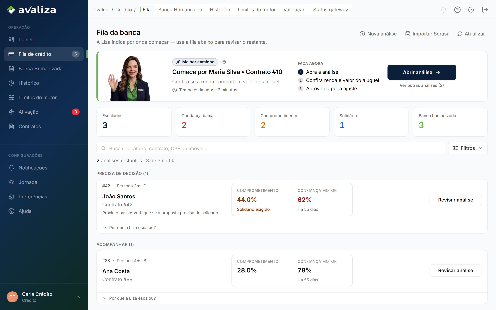
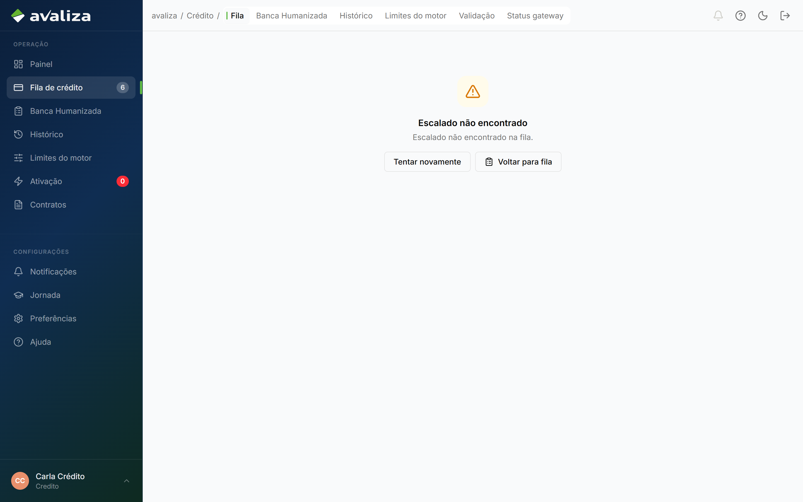
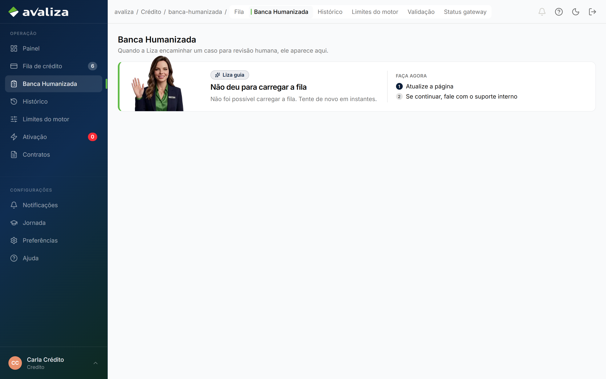

Originar garantia · jornada independente
Banca humanizada
Dono do resultado: Crédito — Responsável de Crédito
- Gatilho
- O motor escalou. Crédito não inicia — recebe.
- Resultado
- Aprovar, negar ou exigir solidário no dossiê. Irreversível e auditável.
- Lifecycle
- Fila própria. Pode abrir horas depois da NP. Não é o 'próximo passo' do corretor.
- Atores na operação
- Analista de crédito
credito
- Analista de crédito
- Dono (setor)
- Crédito
- Outros setores
- Ninguém além do dono
Sequência interna (só aqui)
Estes momentos são obrigatórios dentro desta jornada. Não são o grafo global e não são o menu do papel.
-
Pegar o próximo da fila
Por urgência da Liza, não pela ordem da lista.
-
Decidir no dossiê
A decisão não é na listagem.
Telas (evidência)
Superfícies atuais onde este ciclo aparece. Abrir a tela não significa avançar uma etapa.

/credito · evidência, não etapa
/credito/analisar?auditId=550e8400-e29b-41d4-a716-446655440004 · evidência, não etapa
/credito/banca-humanizada · evidência, não etapaIsto não é esta jornada
- Análise avulsa, Serasa, validação e gateway são capacidades — não este ciclo.
- Ativação do locatário só começa se a decisão for positiva, e com outro ator.